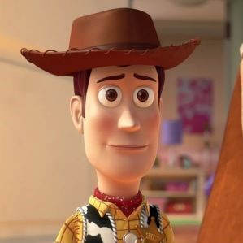

Woody and the gang go on a road trip with new toy Forky, who's convinced he's trash and doesn't yet understand his role in the world. Along the way, Woody is unexpectedly reunited with
independent spirit Bo Peep and finds himself faced with a decision, and a future, he never imagined.

Played by Tom Hanks
He is a vintage cowboy doll that originally belonged to a boy
named Andy Davis. As Andy's favorite since kindergarten, Woody
served as the leader of Andy's toys, a position he upheld by
looking out for each member of the group. When Andy enters
adulthood and leaves for college, Woody is donated to a little girl
named Bonnie Anderson. He remains with Bonnie for some time,
before choosing to become an owner-less antique devoted to
helping lost toys find owners, alongside his girlfriend Bo Peep.

Played by Tim Allen
He is a spaceman action figure originally belonging to Andy
Davis. Buzz was created during a time where astronauts were
especially popular amongst children. His arrival in the original Toy
Story created conflict with Andy's favorite toy Sheriff Woody,
though this rivalry would eventually blossom into a lifelong
friendship.